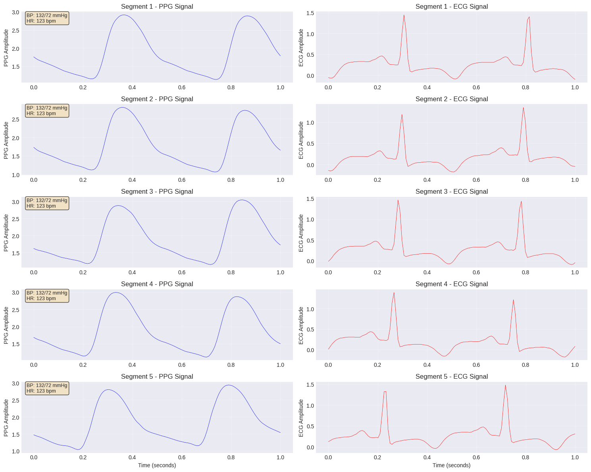
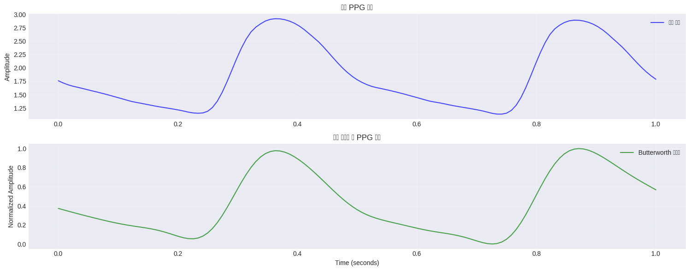
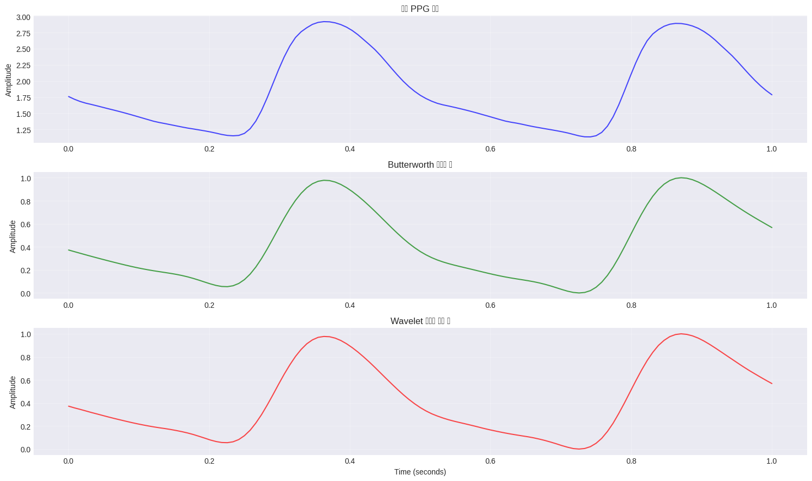
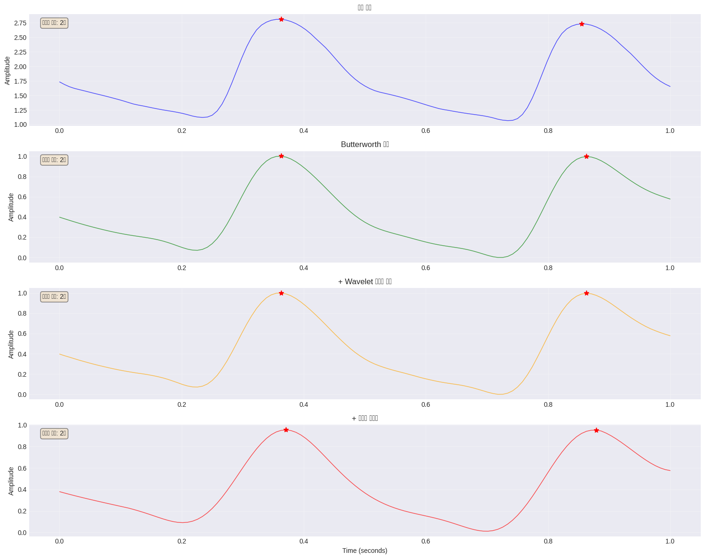
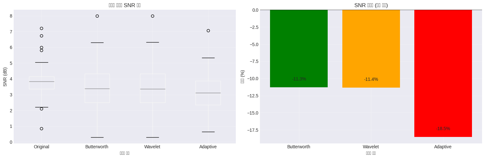

--2025-11-24 01:58:15-- https://archive.ics.uci.edu/static/public/340/cuff+less+blood+pressure+estimation.zip
Resolving archive.ics.uci.edu (archive.ics.uci.edu)... 128.195.10.252
Connecting to archive.ics.uci.edu (archive.ics.uci.edu)|128.195.10.252|:443... connected.
HTTP request sent, awaiting response... 200 OK
Length: unspecified
Saving to: ‘uci_bp.zip’
uci_bp.zip [ <=> ] 790.68M 21.3MB/s in 40s
2025-11-24 02:13:55 (20.0 MB/s) - Read error at byte 829087744 (Connection timed out).Retrying.
--2025-11-24 02:13:56-- (try: 2) https://archive.ics.uci.edu/static/public/340/cuff+less+blood+pressure+estimation.zip
Connecting to archive.ics.uci.edu (archive.ics.uci.edu)|128.195.10.252|:443... connected.
HTTP request sent, awaiting response... 200 OK
Length: unspecified
Saving to: ‘uci_bp.zip’
uci_bp.zip [ <=> ] 3.13G 13.8MB/s in 7m 36s
2025-11-24 02:21:33 (7.03 MB/s) - ‘uci_bp.zip’ saved [3363163675]
📁 다운로드된 파일 목록:
- Part_2.mat
- Part_3.mat
- Part_1.mat
- Part_4.mat
- __MACOSX
Code
import h5pyimport numpy as np# 데이터 구조 확인fs =125# UCI BP 데이터셋 설명에 명시된 샘플링 주파수# Part_1.mat 파일 구조 확인with h5py.File('/content/uci_bp/Part_1.mat', 'r') as f:print("🔍 MAT 파일 내부 구조:")print(f" Keys: {list(f.keys())}") # ['#refs#', 'Part_1'] 이런 식으로 나올 것# '#refs#' 같은 내부 키는 제외하고 실제 데이터 키만 사용 data_keys = [k for k in f.keys() ifnot k.startswith('#')]ifnot data_keys:raiseValueError("데이터 key(예: Part_1)를 찾을 수 없습니다.") var_name = data_keys[0] # 예: 'Part_1' cell = f[var_name]print(f" Variable name: {var_name}")print(f" Cell shape: {cell.shape ifhasattr(cell, 'shape') else'N/A'}")print(f" Cell dtype: {cell.dtype}")# 데이터 로드 함수 정의def load_record(file_path, record_idx=0):""" MAT 파일에서 특정 레코드를 로드하는 함수 Parameters: ----------- file_path: str, MAT 파일 경로 record_idx: int, 로드할 레코드 인덱스 Returns: -------- dict: PPG, ABP, ECG 신호를 포함한 딕셔너리 """with h5py.File(file_path, 'r') as f:# '#refs#' 제외하고 실제 데이터 키 선택 (Part_1, Part_2, ...) data_keys = [k for k in f.keys() ifnot k.startswith('#')]ifnot data_keys:raiseValueError("데이터 key를 찾을 수 없습니다.") var_name = data_keys[0] cell = f[var_name] # 예: <HDF5 dataset "Part_1": shape (3000, 1), type "|O"># 레코드 참조 가져오기 (object reference)iflen(cell.shape) ==2: record_ref = cell[record_idx, 0]else: record_ref = cell[record_idx]# 실제 데이터 읽기 → shape (T, 3) record_data = f[record_ref][:]# 신호 추출# UCI/BP 데이터는 각 **열**이 채널로 쓰이는 예제가 많음:# col 0: PPG, col 1: ABP, col 2: ECG ppg = record_data[:, 0] abp = record_data[:, 1] ecg = record_data[:, 2]return {'ppg': ppg,'abp': abp,'ecg': ecg,'fs': fs }# 테스트 로드test_record = load_record('/content/uci_bp/Part_1.mat', 0)print(f"\n✅ 테스트 레코드 로드 성공!")print(f" PPG shape: {test_record['ppg'].shape}")print(f" ABP shape: {test_record['abp'].shape}")print(f" ECG shape: {test_record['ecg'].shape}")
🔍 MAT 파일 내부 구조:
Keys: ['#refs#', 'Part_1']
Variable name: Part_1
Cell shape: (3000, 1)
Cell dtype: object
✅ 테스트 레코드 로드 성공!
PPG shape: (61000,)
ABP shape: (61000,)
ECG shape: (61000,)
Code
import osimport h5pydef load_all_records(max_records_per_part=10, max_parts=3):""" 모든 Part 파일에서 레코드를 로드하는 함수 Parameters: ----------- max_records_per_part: int, 각 Part당 최대 로드할 레코드 수 max_parts: int, 최대 로드할 Part 파일 수 Returns: -------- list: 모든 레코드를 포함한 리스트 """ all_records = []# Part 파일들 순회for part_idx inrange(1, max_parts +1): file_path =f'/content/uci_bp/Part_{part_idx}.mat'ifnot os.path.exists(file_path):print(f"⚠️ {file_path} 파일이 없습니다.")continueprint(f"📂 Part_{part_idx}.mat 로드 중...")try:with h5py.File(file_path, 'r') as f:# '#refs#' 같은 내부 key는 제외하고 실제 데이터 key(Part_1, Part_2, ...)만 사용 data_keys = [k for k in f.keys() ifnot k.startswith('#')]ifnot data_keys:print(f" ⚠️ {file_path} 안에 데이터 key를 찾을 수 없습니다. (keys={list(f.keys())})")continue var_name = data_keys[0] # 예: 'Part_1' cell = f[var_name] # <HDF5 dataset "Part_1": shape (N_records, 1), type "|O"># 레코드 수 확인ifhasattr(cell, 'shape') andlen(cell.shape) >=1: n_records = cell.shape[0]else: n_records =len(cell)print(f" 총 {n_records}개 레코드 발견")# 지정된 수만큼 레코드 로드for rec_idx inrange(min(n_records, max_records_per_part)):try: record = load_record(file_path, rec_idx) # 이미 수정한 load_record 사용 record['part'] = part_idx record['record_idx'] = rec_idx all_records.append(record)exceptExceptionas e:print(f" ⚠️ 레코드 {rec_idx} 로드 실패: {e}")continueexceptExceptionas e:print(f"⚠️ Part_{part_idx} 로드 실패: {e}")continuereturn all_records# 데이터 로드 (시간 관계상 제한적으로 로드)print("🔄 데이터셋 로드 시작...")all_records = load_all_records(max_records_per_part=20, max_parts=2)print(f"\n✅ 총 {len(all_records)}개 레코드 로드 완료!")
🔄 데이터셋 로드 시작...
📂 Part_1.mat 로드 중...
총 3000개 레코드 발견
📂 Part_2.mat 로드 중...
총 3000개 레코드 발견
✅ 총 40개 레코드 로드 완료!
Code
from scipy.signal import find_peaksimport numpy as npdef extract_bp_features(abp_signal, fs=125):""" ABP 신호에서 수축기/이완기 혈압 추출 Parameters: ----------- abp_signal: np.array, ABP 신호 fs: int, 샘플링 주파수 Returns: -------- dict: SBP, DBP, MAP, pulse_pressure, heart_rate (조건 만족 못 하면 None) """# 피크 검출 (수축기 혈압 후보)# prominence 조건은 일단 빼고, 간격도 0.3초로 살짝 완화 peaks, _ = find_peaks(abp_signal, distance=int(0.3* fs))# 골 검출 (이완기 혈압 후보) valleys, _ = find_peaks(-abp_signal, distance=int(0.3* fs))# 피크가 하나도 없으면 혈압/심박을 정의하기 어려우니 Noneiflen(peaks) ==0:returnNone# 수축기 혈압: 피크값 평균 sbp =float(np.mean(abp_signal[peaks]))# 이완기 혈압: valleys 있으면 평균, 없으면 5퍼센타일로 근사 (fallback)iflen(valleys) >0: dbp =float(np.mean(abp_signal[valleys]))else: dbp =float(np.percentile(abp_signal, 5))# 평균 동맥압 (MAP): 신호 평균 map_bp =float(np.mean(abp_signal))# 맥압 pp = sbp - dbp# 심박수 (bpm) duration_sec =len(abp_signal) / fs heart_rate =float(len(peaks) / duration_sec *60.0)# NaN / inf 방어if (not np.isfinite(sbp)) or (not np.isfinite(dbp)) or (not np.isfinite(heart_rate)):returnNonereturn {'sbp': sbp,'dbp': dbp,'map': map_bp,'pulse_pressure': pp,'heart_rate': heart_rate }# 데이터프레임 생성print("📊 데이터 구조화 중...")processed_data = []for record in all_records:# 혈압 특징 추출 bp_features = extract_bp_features(record['abp'], fs)if bp_features isnotNone:# 5초 신호를 1초 세그먼트로 분할 segment_length = fs # 1초 n_segments =len(record['ppg']) // segment_lengthfor seg_idx inrange(n_segments): start = seg_idx * segment_length end = start + segment_length segment_data = {'part': record['part'],'record_idx': record['record_idx'],'segment_idx': seg_idx,'ppg_signal': record['ppg'][start:end],'ecg_signal': record['ecg'][start:end],'sbp': bp_features['sbp'],'dbp': bp_features['dbp'],'map': bp_features['map'],'pulse_pressure': bp_features['pulse_pressure'],'heart_rate': bp_features['heart_rate'] } processed_data.append(segment_data)df = pd.DataFrame(processed_data)print(f"✅ 총 {len(df)}개 세그먼트 생성 완료!")# 데이터 정보 출력print("\n📈 데이터셋 통계:")print(df[['sbp', 'dbp', 'map', 'heart_rate']].describe())
📊 데이터 구조화 중...
✅ 총 13032개 세그먼트 생성 완료!
📈 데이터셋 통계:
sbp dbp map heart_rate
count 13032.000000 13032.000000 13032.000000 13032.000000
mean 107.063160 68.024197 84.287880 107.684162
std 20.983726 4.492531 7.808056 11.160670
min 87.066447 60.040125 75.006407 82.500000
25% 88.263343 64.183873 76.798432 97.368421
50% 93.127635 68.806307 80.836997 111.315789
75% 130.111519 71.834591 91.792230 117.263514
max 149.756024 80.863778 104.822794 124.125000
# 샘플 PPG/ECG 신호 시각화 (처음 5개)fig, axes = plt.subplots(5, 2, figsize=(15, 12))time_axis = np.linspace(0, 1, fs) # 1초 세그먼트for i inrange(min(5, len(df))):# PPG 신호 axes[i, 0].plot(time_axis, df.iloc[i]['ppg_signal'], 'b-', linewidth=0.5) axes[i, 0].set_title(f'Segment {i+1} - PPG Signal') axes[i, 0].set_ylabel('PPG Amplitude') axes[i, 0].grid(True, alpha=0.3)# 정보 표시 bp_info =f"BP: {df.iloc[i]['sbp']:.0f}/{df.iloc[i]['dbp']:.0f} mmHg" hr_info =f"HR: {df.iloc[i]['heart_rate']:.0f} bpm" axes[i, 0].text(0.02, 0.98, f"{bp_info}\n{hr_info}", transform=axes[i, 0].transAxes, fontsize=9, verticalalignment='top', bbox=dict(boxstyle='round', facecolor='wheat', alpha=0.7))# ECG 신호 axes[i, 1].plot(time_axis, df.iloc[i]['ecg_signal'], 'r-', linewidth=0.5) axes[i, 1].set_title(f'Segment {i+1} - ECG Signal') axes[i, 1].set_ylabel('ECG Amplitude') axes[i, 1].grid(True, alpha=0.3)if i ==4: axes[i, 0].set_xlabel('Time (seconds)') axes[i, 1].set_xlabel('Time (seconds)')plt.tight_layout()plt.show()print("🔍 **학습 포인트 #1**")print("PPG 신호는 혈액량 변화를 광학적으로 측정한 신호로, 심박 주기마다 특징적인 파형을 보입니다.")print("ECG와 PPG 신호의 시간 지연(PTT: Pulse Transit Time)은 혈압과 상관관계가 있어 중요한 특징입니다.")

🔍 **학습 포인트 #1**
PPG 신호는 혈액량 변화를 광학적으로 측정한 신호로, 심박 주기마다 특징적인 파형을 보입니다.
ECG와 PPG 신호의 시간 지연(PTT: Pulse Transit Time)은 혈압과 상관관계가 있어 중요한 특징입니다.
2.8 2️⃣ 데이터 전처리
2.8.1 2.1 기본 전처리
먼저 기본적인 노이즈 제거를 수행합니다.
Code
def basic_preprocessing(ppg_signal, sampling_rate=125):"""기본 전처리: Butterworth 필터 적용"""# 1. DC 성분 제거 (평균 제거) ppg_centered = ppg_signal - np.mean(ppg_signal)# 2. Butterworth 대역통과 필터 (0.5-8 Hz) nyquist = sampling_rate /2 low =0.5/ nyquist high =8.0/ nyquist b, a = butter(4, [low, high], btype='band') ppg_filtered = filtfilt(b, a, ppg_centered)# 3. 정규화 (0-1 범위) ppg_normalized = (ppg_filtered - np.min(ppg_filtered)) / (np.max(ppg_filtered) - np.min(ppg_filtered))return ppg_normalized# 모든 신호에 기본 전처리 적용df['ppg_basic'] = df['ppg_signal'].apply(lambda x: basic_preprocessing(x))# 전처리 전후 비교 시각화sample_idx =0fig, axes = plt.subplots(2, 1, figsize=(15, 6))axes[0].plot(time_axis, df.iloc[sample_idx]['ppg_signal'], 'b-', alpha=0.7, label='원본 신호')axes[0].set_title('원본 PPG 신호')axes[0].set_ylabel('Amplitude')axes[0].legend()axes[0].grid(True, alpha=0.3)axes[1].plot(time_axis, df.iloc[sample_idx]['ppg_basic'], 'g-', alpha=0.7, label='Butterworth 필터링')axes[1].set_title('기본 전처리 후 PPG 신호')axes[1].set_ylabel('Normalized Amplitude')axes[1].set_xlabel('Time (seconds)')axes[1].legend()axes[1].grid(True, alpha=0.3)plt.tight_layout()plt.show()print("🔍 **학습 포인트 #1**")print("Butterworth 필터는 통과대역에서 평탄한 주파수 응답을 가지며, PPG 신호의 기본 노이즈 제거에 효과적입니다.")print("0.5-8 Hz 대역은 심박 관련 주파수 성분을 포함하면서 고주파 노이즈와 기저선 변동을 제거합니다.")

🔍 **학습 포인트 #1**
Butterworth 필터는 통과대역에서 평탄한 주파수 응답을 가지며, PPG 신호의 기본 노이즈 제거에 효과적입니다.
0.5-8 Hz 대역은 심박 관련 주파수 성분을 포함하면서 고주파 노이즈와 기저선 변동을 제거합니다.
2.8.2 2.2 고급 전처리 기법 적용
Wavelet 변환을 이용한 노이즈 제거를 추가로 적용합니다.
Code
def wavelet_denoising(ppg_signal, wavelet='db4', level=5):"""Wavelet 변환 기반 노이즈 제거"""# Wavelet 분해 coeffs = pywt.wavedec(ppg_signal, wavelet, level=level)# Threshold 계산 (Universal threshold) sigma = np.median(np.abs(coeffs[-1])) /0.6745 threshold = sigma * np.sqrt(2* np.log(len(ppg_signal)))# Soft thresholding 적용 coeffs_thresh = []for i, coeff inenumerate(coeffs):if i ==0: # Approximation coefficients는 유지 coeffs_thresh.append(coeff)else: # Detail coefficients에 thresholding 적용 coeffs_thresh.append(pywt.threshold(coeff, threshold, 'soft'))# 신호 재구성 ppg_denoised = pywt.waverec(coeffs_thresh, wavelet)# 길이 조정 (재구성 시 길이가 달라질 수 있음)iflen(ppg_denoised) >len(ppg_signal): ppg_denoised = ppg_denoised[:len(ppg_signal)]return ppg_denoised# Wavelet 노이즈 제거 적용df['ppg_wavelet'] = df['ppg_basic'].apply(lambda x: wavelet_denoising(x))# 비교 시각화fig, axes = plt.subplots(3, 1, figsize=(15, 9))sample_idx =0axes[0].plot(time_axis, df.iloc[sample_idx]['ppg_signal'], 'b-', alpha=0.7)axes[0].set_title('원본 PPG 신호')axes[0].set_ylabel('Amplitude')axes[0].grid(True, alpha=0.3)axes[1].plot(time_axis, df.iloc[sample_idx]['ppg_basic'], 'g-', alpha=0.7)axes[1].set_title('Butterworth 필터링 후')axes[1].set_ylabel('Amplitude')axes[1].grid(True, alpha=0.3)axes[2].plot(time_axis, df.iloc[sample_idx]['ppg_wavelet'], 'r-', alpha=0.7)axes[2].set_title('Wavelet 노이즈 제거 후')axes[2].set_ylabel('Amplitude')axes[2].set_xlabel('Time (seconds)')axes[2].grid(True, alpha=0.3)plt.tight_layout()plt.show()print("🔍 **학습 포인트 #2**")print("Wavelet 변환은 시간-주파수 영역에서 신호를 분석하여, 노이즈와 신호 성분을 효과적으로 분리합니다.")print("Soft thresholding은 노이즈를 제거하면서도 신호의 연속성을 유지하는 장점이 있습니다.")

🔍 **학습 포인트 #2**
Wavelet 변환은 시간-주파수 영역에서 신호를 분석하여, 노이즈와 신호 성분을 효과적으로 분리합니다.
Soft thresholding은 노이즈를 제거하면서도 신호의 연속성을 유지하는 장점이 있습니다.
2.8.3 2.3 도메인 특화 전처리
PPG 신호의 의료적 특성을 고려한 적응형 필터링을 적용합니다.
Code
def adaptive_filtering(ppg_signal, window_size=15):"""적응형 필터링: PPG 신호 특성에 맞춘 동적 필터"""# 1. Median 필터로 스파이크 노이즈 제거 ppg_median = medfilt(ppg_signal, kernel_size=5)# 2. Savitzky-Golay 필터로 smoothing ppg_smooth = savgol_filter(ppg_median, window_size, 3)# 3. 피크 검출 및 신호 품질 평가 peaks, properties = find_peaks(ppg_smooth, distance=50, prominence=0.1)# 4. 신호 품질에 따른 적응형 필터링iflen(peaks) <3: # 신호 품질이 낮은 경우# 더 강한 smoothing 적용 ppg_final = savgol_filter(ppg_smooth, window_size*2-1, 3)else: ppg_final = ppg_smoothreturn ppg_final# 적응형 필터링 적용df['ppg_adaptive'] = df['ppg_wavelet'].apply(lambda x: adaptive_filtering(x))# 전처리 단계별 효과 비교fig, axes = plt.subplots(4, 1, figsize=(15, 12))sample_idx =1# 노이즈가 있는 샘플 선택processing_stages = [ ('원본 신호', df.iloc[sample_idx]['ppg_signal'], 'blue'), ('Butterworth 필터', df.iloc[sample_idx]['ppg_basic'], 'green'), ('+ Wavelet 노이즈 제거', df.iloc[sample_idx]['ppg_wavelet'], 'orange'), ('+ 적응형 필터링', df.iloc[sample_idx]['ppg_adaptive'], 'red')]for i, (title, signal, color) inenumerate(processing_stages): axes[i].plot(time_axis, signal, color=color, alpha=0.7, linewidth=1) axes[i].set_title(f'{title}') axes[i].set_ylabel('Amplitude') axes[i].grid(True, alpha=0.3)# 피크 검출 및 표시 peaks, _ = find_peaks(signal, distance=50)iflen(peaks) >0: axes[i].plot(time_axis[peaks], signal[peaks], 'r*', markersize=8) axes[i].text(0.02, 0.95, f'검출된 피크: {len(peaks)}개', transform=axes[i].transAxes, fontsize=10, verticalalignment='top', bbox=dict(boxstyle='round', facecolor='wheat', alpha=0.5))axes[-1].set_xlabel('Time (seconds)')plt.tight_layout()plt.show()print("🔍 **학습 포인트 #3**")print("적응형 필터링은 신호 품질을 실시간으로 평가하여 필터 파라미터를 동적으로 조정합니다.")print("의료 신호의 경우, 과도한 smoothing은 임상적으로 중요한 특징을 제거할 수 있으므로 균형이 중요합니다.")

🔍 **학습 포인트 #3**
적응형 필터링은 신호 품질을 실시간으로 평가하여 필터 파라미터를 동적으로 조정합니다.
의료 신호의 경우, 과도한 smoothing은 임상적으로 중요한 특징을 제거할 수 있으므로 균형이 중요합니다.
2.8.4 2.4 전처리 효과 비교
각 전처리 단계의 신호 품질 개선 효과를 정량적으로 평가합니다.
Code
def calculate_snr(signal, noise_estimation_method='mad'):"""신호 대 잡음비(SNR) 계산"""if noise_estimation_method =='mad':# Median Absolute Deviation 방법 noise = np.median(np.abs(signal - np.median(signal))) signal_power = np.var(signal) snr =10* np.log10(signal_power / (noise **2))return snr# 각 전처리 단계별 SNR 계산snr_results = []for idx inrange(min(100, len(df))): # 처음 100개 샘플에 대해 평가 snr_original = calculate_snr(df.iloc[idx]['ppg_signal']) snr_basic = calculate_snr(df.iloc[idx]['ppg_basic']) snr_wavelet = calculate_snr(df.iloc[idx]['ppg_wavelet']) snr_adaptive = calculate_snr(df.iloc[idx]['ppg_adaptive']) snr_results.append({'Original': snr_original,'Butterworth': snr_basic,'Wavelet': snr_wavelet,'Adaptive': snr_adaptive })snr_df = pd.DataFrame(snr_results)# SNR 개선 효과 시각화fig, (ax1, ax2) = plt.subplots(1, 2, figsize=(15, 5))# Box plotsnr_df.boxplot(ax=ax1)ax1.set_title('전처리 단계별 SNR 분포')ax1.set_ylabel('SNR (dB)')ax1.set_xlabel('전처리 방법')ax1.grid(True, alpha=0.3)# 평균 SNR 개선율mean_snr = snr_df.mean()improvement = ((mean_snr - mean_snr['Original']) / mean_snr['Original'] *100).drop('Original')ax2.bar(improvement.index, improvement.values, color=['green', 'orange', 'red'])ax2.set_title('SNR 개선율 (원본 대비)')ax2.set_ylabel('개선율 (%)')ax2.set_xlabel('전처리 방법')ax2.axhline(y=0, color='black', linestyle='-', linewidth=0.5)ax2.grid(True, alpha=0.3)# 수치 표시for i, (method, value) inenumerate(improvement.items()): ax2.text(i, value +1, f'{value:.1f}%', ha='center')plt.tight_layout()plt.show()print("📊 전처리 효과 요약:")print(f"평균 SNR (dB):")print(mean_snr.to_string())print(f"\n최종 적응형 필터링 후 SNR 개선: {improvement['Adaptive']:.1f}%")

📊 전처리 효과 요약:
평균 SNR (dB):
Original 3.805571
Butterworth 3.375267
Wavelet 3.373342
Adaptive 3.100524
최종 적응형 필터링 후 SNR 개선: -18.5%
2.9 3️⃣ 모델링
PPG 신호로부터 혈압을 추정하기 위한 점진적 모델 개선 과정입니다.
2.9.1 3.1 특징 추출
먼저 PPG 신호로부터 의미있는 특징들을 추출합니다.
Code
def extract_time_domain_features(ppg_signal, sampling_rate=125):"""시간 도메인 특징 추출""" features = {}# 기본 통계 features['mean'] = np.mean(ppg_signal) features['std'] = np.std(ppg_signal) features['max'] = np.max(ppg_signal) features['min'] = np.min(ppg_signal) features['range'] = features['max'] - features['min']# 피크 관련 특징 peaks, properties = find_peaks(ppg_signal, distance=50, prominence=0.1)iflen(peaks) >1:# Peak intervals (심박 변이도 관련) peak_intervals = np.diff(peaks) / sampling_rate features['mean_rr'] = np.mean(peak_intervals) features['std_rr'] = np.std(peak_intervals)# 🔧 여기 조건 추가: interval이 2개 이상 있어야 rmssd 계산iflen(peak_intervals) >1: features['rmssd'] = np.sqrt( np.mean(np.diff(peak_intervals) **2) )else: features['rmssd'] =0.0# Peak amplitudes peak_amplitudes = ppg_signal[peaks] features['mean_peak_amp'] = np.mean(peak_amplitudes) features['std_peak_amp'] = np.std(peak_amplitudes)else:# 피크가 충분하지 않은 경우 기본값 features['mean_rr'] =0.0 features['std_rr'] =0.0 features['rmssd'] =0.0 features['mean_peak_amp'] =0.0 features['std_peak_amp'] =0.0# Morphological features (std=0 방어)if features['std'] ==0: features['skewness'] =0.0 features['kurtosis'] =0.0else: z = (ppg_signal - features['mean']) / features['std'] features['skewness'] = np.mean(z **3) features['kurtosis'] = np.mean(z **4)return featuresdef extract_frequency_domain_features(ppg_signal, sampling_rate=125):"""주파수 도메인 특징 추출""" features = {}# Power Spectral Density frequencies, psd = welch(ppg_signal, fs=sampling_rate, nperseg=256)# 주파수 대역별 파워 vlf_band = (0.003, 0.04) # Very Low Frequency lf_band = (0.04, 0.15) # Low Frequency hf_band = (0.15, 0.4) # High Frequency vlf_power = np.trapz(psd[(frequencies >= vlf_band[0]) & (frequencies < vlf_band[1])]) lf_power = np.trapz(psd[(frequencies >= lf_band[0]) & (frequencies < lf_band[1])]) hf_power = np.trapz(psd[(frequencies >= hf_band[0]) & (frequencies < hf_band[1])]) total_power = np.trapz(psd) features['vlf_power'] = vlf_power features['lf_power'] = lf_power features['hf_power'] = hf_power features['lf_hf_ratio'] = lf_power / (hf_power +1e-10) features['total_power'] = total_power# Dominant frequency dominant_freq_idx = np.argmax(psd) features['dominant_freq'] = frequencies[dominant_freq_idx] features['dominant_power'] = psd[dominant_freq_idx]# Spectral entropy psd_norm = psd / np.sum(psd) features['spectral_entropy'] =-np.sum(psd_norm * np.log(psd_norm +1e-10))return featuresdef extract_nonlinear_features(ppg_signal):"""비선형 특징 추출""" features = {}# Sample Entropy (simplified version)def sample_entropy(signal, m=2, r=0.2): N =len(signal) r = r * np.std(signal)def _maxdist(x_i, x_j, m):returnmax([abs(ua - va) for ua, va inzip(x_i, x_j)])def _phi(m): patterns = np.array([signal[i:i+m] for i inrange(N-m+1)]) C =0for i inrange(len(patterns)): matches =0for j inrange(len(patterns)):if i != j and _maxdist(patterns[i], patterns[j], m) <= r: matches +=1if matches >0: C += np.log(matches / (N-m))return C / (N-m+1)try:return _phi(m) - _phi(m+1)except:return0 features['sample_entropy'] = sample_entropy(ppg_signal[:500]) # 계산 시간 단축을 위해 일부만 사용# Detrended Fluctuation Analysis (simplified) cumsum = np.cumsum(ppg_signal - np.mean(ppg_signal)) features['dfa_alpha'] = np.polyfit(np.log(np.arange(10, 100)), np.log([np.std(cumsum[i:i+10]) for i inrange(90)]), 1)[0]return features# 모든 특징 추출 통합def extract_all_features(ppg_signal, sampling_rate=125):"""모든 도메인의 특징 통합 추출""" all_features = {}# 시간 도메인 time_features = extract_time_domain_features(ppg_signal, sampling_rate) all_features.update({'time_'+ k: v for k, v in time_features.items()})# 주파수 도메인 freq_features = extract_frequency_domain_features(ppg_signal, sampling_rate) all_features.update({'freq_'+ k: v for k, v in freq_features.items()})# 비선형 nonlinear_features = extract_nonlinear_features(ppg_signal) all_features.update({'nonlinear_'+ k: v for k, v in nonlinear_features.items()})return all_features# 모든 샘플에 대해 특징 추출print("🔄 특징 추출 중...")feature_list = []for idx inrange(len(df)):# df 구조에 맞게: ppg_signal 사용 ppg_sig = df.iloc[idx]['ppg_signal']# PPG에서 모든 특징 추출 features = extract_all_features(ppg_sig, sampling_rate=fs)# df에 실제로 있는 것만 추가 (age, gender는 아직 없음) features['heart_rate'] = df.iloc[idx]['heart_rate'] feature_list.append(features)if (idx +1) %100==0:print(f" 처리 완료: {idx +1}/{len(df)}")# Feature DataFrame 생성feature_df = pd.DataFrame(feature_list)print(f"\n✅ 총 {feature_df.shape[1]}개 특징 추출 완료!")print(f"특징 카테고리: "f"시간 도메인({sum('time_'in col for col in feature_df.columns)}), "f"주파수 도메인({sum('freq_'in col for col in feature_df.columns)}), "f"비선형({sum('nonlinear_'in col for col in feature_df.columns)}), "f"기타({sum(notany(p in col for p in ['time_', 'freq_', 'nonlinear_']) for col in feature_df.columns)})")# 특징 중요도 미리보기 (상관관계 기반)feature_importance = pd.DataFrame({'feature': feature_df.columns,'sbp_correlation': [abs(feature_df[col].corr(df['sbp'])) for col in feature_df.columns],'dbp_correlation': [abs(feature_df[col].corr(df['dbp'])) for col in feature_df.columns]}).sort_values('sbp_correlation', ascending=False)print("\n📊 혈압과 상관관계가 높은 상위 10개 특징:")print(feature_importance.head(10))
🔄 특징 추출 중...
처리 완료: 100/13032
처리 완료: 200/13032
처리 완료: 300/13032
처리 완료: 400/13032
처리 완료: 500/13032
처리 완료: 600/13032
처리 완료: 700/13032
처리 완료: 800/13032
처리 완료: 900/13032
처리 완료: 1000/13032
처리 완료: 1100/13032
처리 완료: 1200/13032
처리 완료: 1300/13032
처리 완료: 1400/13032
처리 완료: 1500/13032
처리 완료: 1600/13032
처리 완료: 1700/13032
처리 완료: 1800/13032
처리 완료: 1900/13032
처리 완료: 2000/13032
처리 완료: 2100/13032
처리 완료: 2200/13032
처리 완료: 2300/13032
처리 완료: 2400/13032
처리 완료: 2500/13032
처리 완료: 2600/13032
처리 완료: 2700/13032
처리 완료: 2800/13032
처리 완료: 2900/13032
처리 완료: 3000/13032
처리 완료: 3100/13032
처리 완료: 3200/13032
처리 완료: 3300/13032
처리 완료: 3400/13032
처리 완료: 3500/13032
처리 완료: 3600/13032
처리 완료: 3700/13032
처리 완료: 3800/13032
처리 완료: 3900/13032
처리 완료: 4000/13032
처리 완료: 4100/13032
처리 완료: 4200/13032
처리 완료: 4300/13032
처리 완료: 4400/13032
처리 완료: 4500/13032
처리 완료: 4600/13032
처리 완료: 4700/13032
처리 완료: 4800/13032
처리 완료: 4900/13032
처리 완료: 5000/13032
처리 완료: 5100/13032
처리 완료: 5200/13032
처리 완료: 5300/13032
처리 완료: 5400/13032
처리 완료: 5500/13032
처리 완료: 5600/13032
처리 완료: 5700/13032
처리 완료: 5800/13032
처리 완료: 5900/13032
처리 완료: 6000/13032
처리 완료: 6100/13032
처리 완료: 6200/13032
처리 완료: 6300/13032
처리 완료: 6400/13032
처리 완료: 6500/13032
처리 완료: 6600/13032
처리 완료: 6700/13032
처리 완료: 6800/13032
처리 완료: 6900/13032
처리 완료: 7000/13032
처리 완료: 7100/13032
처리 완료: 7200/13032
처리 완료: 7300/13032
처리 완료: 7400/13032
처리 완료: 7500/13032
처리 완료: 7600/13032
처리 완료: 7700/13032
처리 완료: 7800/13032
처리 완료: 7900/13032
처리 완료: 8000/13032
처리 완료: 8100/13032
처리 완료: 8200/13032
처리 완료: 8300/13032
처리 완료: 8400/13032
처리 완료: 8500/13032
처리 완료: 8600/13032
처리 완료: 8700/13032
처리 완료: 8800/13032
처리 완료: 8900/13032
처리 완료: 9000/13032
처리 완료: 9100/13032
처리 완료: 9200/13032
처리 완료: 9300/13032
처리 완료: 9400/13032
처리 완료: 9500/13032
처리 완료: 9600/13032
처리 완료: 9700/13032
처리 완료: 9800/13032
처리 완료: 9900/13032
처리 완료: 10000/13032
처리 완료: 10100/13032
처리 완료: 10200/13032
처리 완료: 10300/13032
처리 완료: 10400/13032
처리 완료: 10500/13032
처리 완료: 10600/13032
처리 완료: 10700/13032
처리 완료: 10800/13032
처리 완료: 10900/13032
처리 완료: 11000/13032
처리 완료: 11100/13032
처리 완료: 11200/13032
처리 완료: 11300/13032
처리 완료: 11400/13032
처리 완료: 11500/13032
처리 완료: 11600/13032
처리 완료: 11700/13032
처리 완료: 11800/13032
처리 완료: 11900/13032
처리 완료: 12000/13032
처리 완료: 12100/13032
처리 완료: 12200/13032
처리 완료: 12300/13032
처리 완료: 12400/13032
처리 완료: 12500/13032
처리 완료: 12600/13032
처리 완료: 12700/13032
처리 완료: 12800/13032
처리 완료: 12900/13032
처리 완료: 13000/13032
✅ 총 23개 특징 추출 완료!
특징 카테고리: 시간 도메인(12), 주파수 도메인(8), 비선형(2), 기타(1)
📊 혈압과 상관관계가 높은 상위 10개 특징:
feature sbp_correlation dbp_correlation
2 time_max 0.946960 0.616987
0 time_mean 0.935647 0.614713
1 time_std 0.933367 0.591181
4 time_range 0.926977 0.599808
3 time_min 0.898009 0.592197
18 freq_dominant_power 0.880263 0.563094
16 freq_total_power 0.870982 0.544681
10 time_skewness 0.779561 0.580813
19 freq_spectral_entropy 0.693497 0.441845
8 time_mean_peak_amp 0.672582 0.446988
2.9.2 3.2 Baseline 모델 설정
단순 선형 회귀를 baseline으로 설정합니다.
Code
# 데이터 준비X = feature_df.valuesy_sbp = df['sbp'].valuesy_dbp = df['dbp'].values# Train-Test SplitX_train, X_test, y_sbp_train, y_sbp_test, y_dbp_train, y_dbp_test = train_test_split( X, y_sbp, y_dbp, test_size=0.2, random_state=42)# 특징 정규화scaler = StandardScaler()X_train_scaled = scaler.fit_transform(X_train)X_test_scaled = scaler.transform(X_test)print(f"📊 데이터셋 크기:")print(f" Training set: {X_train_scaled.shape[0]} samples")print(f" Test set: {X_test_scaled.shape[0]} samples")print(f" Features: {X_train_scaled.shape[1]}")# Baseline: 선형 회귀print("\n"+"="*50)print("🎯 Baseline 모델: Linear Regression")print("="*50)# SBP 예측lr_sbp = LinearRegression()lr_sbp.fit(X_train_scaled, y_sbp_train)sbp_pred_baseline = lr_sbp.predict(X_test_scaled)# DBP 예측lr_dbp = LinearRegression()lr_dbp.fit(X_train_scaled, y_dbp_train)dbp_pred_baseline = lr_dbp.predict(X_test_scaled)# 성능 평가def evaluate_model(y_true, y_pred, bp_type="SBP"): mae = mean_absolute_error(y_true, y_pred) rmse = np.sqrt(mean_squared_error(y_true, y_pred)) r2 = r2_score(y_true, y_pred)print(f"\n{bp_type} 예측 성능:")print(f" MAE: {mae:.2f} mmHg")print(f" RMSE: {rmse:.2f} mmHg")print(f" R²: {r2:.4f}")return mae, rmse, r2sbp_mae_baseline, sbp_rmse_baseline, sbp_r2_baseline = evaluate_model(y_sbp_test, sbp_pred_baseline, "SBP")dbp_mae_baseline, dbp_rmse_baseline, dbp_r2_baseline = evaluate_model(y_dbp_test, dbp_pred_baseline, "DBP")# 예측 결과 시각화fig, axes = plt.subplots(1, 2, figsize=(12, 5))# SBPaxes[0].scatter(y_sbp_test, sbp_pred_baseline, alpha=0.5)axes[0].plot([y_sbp_test.min(), y_sbp_test.max()], [y_sbp_test.min(), y_sbp_test.max()], 'r--', lw=2)axes[0].set_xlabel('실제 SBP (mmHg)')axes[0].set_ylabel('예측 SBP (mmHg)')axes[0].set_title(f'SBP Baseline (MAE: {sbp_mae_baseline:.2f} mmHg)')axes[0].grid(True, alpha=0.3)# DBPaxes[1].scatter(y_dbp_test, dbp_pred_baseline, alpha=0.5, color='orange')axes[1].plot([y_dbp_test.min(), y_dbp_test.max()], [y_dbp_test.min(), y_dbp_test.max()], 'r--', lw=2)axes[1].set_xlabel('실제 DBP (mmHg)')axes[1].set_ylabel('예측 DBP (mmHg)')axes[1].set_title(f'DBP Baseline (MAE: {dbp_mae_baseline:.2f} mmHg)')axes[1].grid(True, alpha=0.3)plt.tight_layout()plt.show()print("\n🔍 **학습 포인트 #1**")print("Baseline 모델은 가장 단순한 접근법으로, 향후 복잡한 모델들의 성능 개선 정도를 평가하는 기준점이 됩니다.")print("선형 회귀는 해석이 쉽고 계산이 빠르지만, 비선형 관계를 포착하지 못하는 한계가 있습니다.")